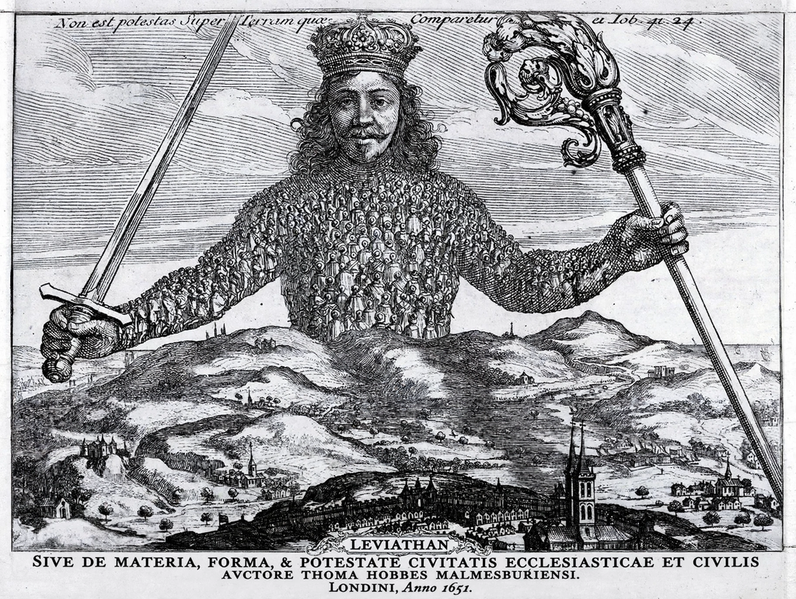

Political theory is the study of the concepts, principles, and values that underlie political life, including justice, freedom, equality, authority, democracy, and the state. As a branch of political philosophy, it is primarily normative — concerned with what political arrangements ought to be — though it also engages the history of political thought and the empirical findings of comparative politics.
The Western tradition begins with Plato's Republic and Aristotle's Politics, continues through medieval thinkers such as Aquinas, and is reshaped in the Renaissance by Niccolò Machiavelli, who analysed power in secular, pragmatic terms. Early modern social-contract theorists — Hobbes, Locke, and Rousseau — grounded political obligation in consent, laying foundations for liberalism. Later landmarks include Mill on liberty, Marx's critique of capitalism, and, in the 20th century, John Rawls's A Theory of Justice (1971), which revived normative theory with its principles of justice as fairness.
Contemporary political theory includes liberal, republican, communitarian, feminist, critical, deliberative-democratic, and green theories, among others. Recurring debates concern the priority of liberty versus equality, the justification of coercion, the obligations of citizens, the legitimacy of borders and global justice, and the political status of animals and future generations. Analytic and "realist" approaches disagree over how far theory should abstract from actual political practice.
Political theory is one of the standard subfields of political science, alongside comparative politics, international relations, and public policy, though its humanistic methods differ from the social-scientific orientation of the other subfields.
See also: Political philosophy · John Rawls · Social contract